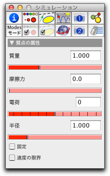

自由質点

力や速度が存在しなければ、自由質点は幾何学的な点との違いはないように見えます。(自由点と自由質点のわずかな違いは、自由質点の方が画面上ですこし明るい色で表示されていることからわかります。)
物体 (たとえば質点)が追加されると、すぐにアニメーションコントロールパネルが画面に現れます。プレイボタンが押されない限り、質点は幾何学的な点のように振舞います。 物理シミュレーションを始めるにはプレイボタンを押します。もし 速度 が質点に設定されたならば、質点は自動的に動き始めます。もし、質点が バネ や 重力といった力の影響を受けるならば、質点の速度は、質点が動いている間、力によって変化します。単位時間あたりの速度の変化は加速度と呼ばれています。力に応じた加速度は次の方程式によって決まります。
| 加速度 = 力 / 質量 |
ここで、 力 は、質点に作用するすべての力のベクトル和です。
質点の設定情報の管理
質点の基本的属性は、 設定情報インスペクタInspectorの物理タブ（上段の4番目）を用いて設定したり変更したりできます。質点の設定情報インスペクタは次のようになっています。:
 |
| 質点のインスペクタ |
それぞれの項目の意味は次の通りです。:
- 質量: これは、物体の物理的質量の値です。"加速度 = 力/質量" という式によって、力が一定ならば質量の小さい方が加速度は大きくなります。これは慣性の法則とみなすこともできます。 (だから、同じ力なら、自動車を押すよりもテニスボールを押す方が簡単なのです。) 一方、質点は重力の影響も受けます。重力は物体の質量に比例します。（このように重い物は、小さい物より重力の影響を受けます。テニスボールの重力は、車のそれより非常に小さいです。）たとえば、自然落下においては、上記の影響の両方が正確に相殺します、そのため、一定の重力のフィールドでは、車は正確にテニスボールと同じくらい速く落ちます。
- 摩擦力: 地球上の普通の環境では、水平な面を転がっているボールは、まもなく停止します。その理由は、"摩擦力"です。 原則として、摩擦力は運動の方向と逆向きに働く力とみなすことができます。この力は、運動する物体が時間とともに失速する原因となります。地球上で日常生活の状況をモデル化するほとんどの物理シミュレーションでは、質点はいくらかの摩擦力を受けると仮定するのが合理的です。対照的に、惑星や電子の動きをモデル化するならば、摩擦力は存在しないと仮定する方が現実的です。初期状態では、質点にかかる摩擦力はゼロに設定されています。すべての質点に働くグローバルな摩擦力を 環境設定 インスペクタで設定することもできます。
- 電荷: 電磁力（クーロン力とローレンツ力）は、帯電している粒子だけに作用します。スライダーを使って電荷をある値に設定することができます。電荷は正か負のどちらかをとります。異符号なら互いに引きあい、同符号なら互いに反発します。粒子の電荷は、両方の粒子が相互作用するか、 環境設定 の"電荷による力を有効にする"ボックスがチェックされている場合のみ意味があります。 初期状態では、質点の電荷はゼロに設定されています。
- 半径: 通常、 CindyLab は、粒子は点のようなものであるとみなします。しかしながら、 環境設定 の「質点はボール」ボックスがチェックされていると、粒子はゼロでない直径を持つ物体として振舞い、衝突したときは互いに跳ね返ります。このスライダーは、粒子の半径を設定します。初期状態では、半径は1.0に設定されています。
- 固定: 通常、質点は自由に動き回ることができます。しかしながら、このボックスがチェックされていると、その質点は物理シミュレーションによって動かされません。 このボックスがチェックされているときでも、質点は重力や静電力を持つことを知っておくことが大切です。次の図は、いくつかの同じように帯電した粒子で作られたかごの中の、3つの帯電した粒子の動きを表します。 外側の粒子は動かないように固定されています。
 |
| T固定した帯電粒子のかごの中の 3つの帯電粒子 |
ピンで留められた点と異なり、「固定された」点はマウスで動かすことができるということを注意しておく必要があります。
- 速度限界: このボタンは粒子の速度に限界を設けます。この性質は、物理的な条件にはなりませんが (光速という絶対的な限界を除いて),これをチェックしておくとシミュレーションの数値的問題を避けられることがあります。
質点と幾何学
幾何学上のいろいろな点と同様、質点も直線や線分、円と結合することができます。その場合、 CindyLab シミュレータは、質点が摩擦のない直線や線分、円周上に取り付けられているように振舞います。次の図は、重力の影響下にあるバネのチェーンが釣りあっている状態を示しますが、ここで、バネの端の点は2つの円周上に取り付けられています。:
 |
| 円につながったバネのチェーン |
CindyScript と質点
いくつかの CindyLab の物体のように、質点はCindyScript によって読み書きのできるいくつかの領域を提供します. 次のリストは、質点に対して利用可能な領域を示します。:
- vx: 速度のx-成分 (実数, 読み書き可)
- vy: 速度のy-成分 (実数, 読み書き可)
- v : 速度ベクトル (2つの実数によるベクトル, 読み書き可)
- fx: 力のx-成分 (実数, 読み出しのみ)
- fy: 力のy-c-成分 (実数, 読み出しのみ)
- f: 力のベクトル (2つの実数によるベクトル, 読み出しのみ)
- kinetic: 運動エネルギー(実数, 読み出しのみ)
- ke: 運動エネルギー(実数, 読み出しのみ)
- mass: 点の質量 (実数, 読み書き可)
- friction: 点の摩擦力 (実数, 読み書き可)
- charge: 点の電荷 (整数, 読み書き可)
- radius: 点の半径 (実数, 読み書き可)
- simulate: この点に対するシミュレーションの on/off (ブール値, 読み書き可)
次もご覧ください
Page last modified on Tuesday 13 of March, 2012 [13:29:44 UTC].
The original document is available at
http://doc.cinderella.de/tiki-index.php?page=Free%20MassJ